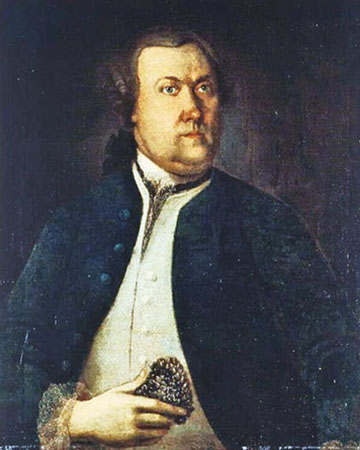
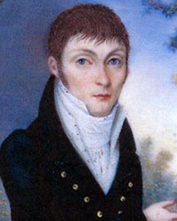
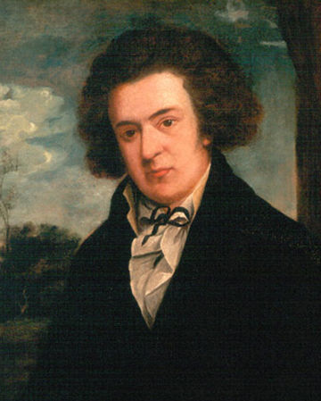

prominent figures in the historical foundation of contemporary botany
1
jacques philippe cornut (1606-1651) - canadensium plantarum historia (1635)
john josselyn (1638-1675)
john banister (1650-1692)
john ray (1686-1704), historia generalis planatarum
john lawson
cadwallader colden
carl linnaeus (1707-1778)

pehr kalm (1716-1779)

constantine rafinesque
john bartram (1699-1777)
gotthilf muhlenberg (1753-1815)
andreÃÅ michaux (1746-1802), flora boreali-americana (1803)

benjamin smith barton (1766-1815) - elements of botany (1803)
frederick pursh (1774-1820), flora americae septentrionalis (1813)
thomas nuttall (1786-1859), the genera of north american plants (1818)
amos eaton (1776-1842) - manual of botany for the northern states (1817)
john torrey (1796-1873) - flora of north america
asa gray (1810-1888)
nathaniel lord britton (founder of the NY botanical garden)(1859-1934)
Footnotes
1. James L. Reveal, "Early Botanical Exploration and Discovery in the Northeast," in Brooklyn Botanic Garden Guides for a Greener Planet: A Native Plants Reader, ed. Niall Dunne (Brooklyn: Brooklyn Botanic Garden, 2012), 13-17.
Bibliography